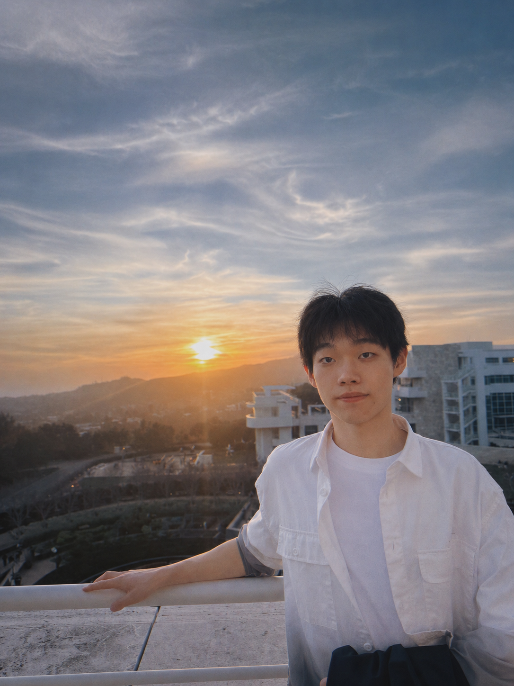

Jinxi (Jace) Yu 虞锦熙
Undergraduate Researcher · University of California, Los Angeles
Hi! I’m Jinxi (Jace) Yu, a Computer Science undergraduate at UCLA. My research focuses on multi-agent systems, LLM safety, and efficient AI inference.
I work on autonomous mathematical reasoning with the UCLA Moonshot Math Harness, alongside research with Prof. Kai-Wei Chang at UCLA’s NLP Lab and Prof. Yizhou Sun at UCLA’s SCAI Lab.

Education
University of California, Los Angeles
B.S. in Computer Science
September 2024 - June 2027 · Los Angeles, CA
- GPA
- 3.97 / 4.00
- Awards
- Dean's Honors List
- Relevant Coursework
- Object-Oriented Programming (C++), Machine Learning, Natural Language Processing, Deep Learning, Algorithms, Operating System, Data Mining
Publications
Google ScholarPrivacy-Preserving Topology-Guided Safety for LLM-Based Multi-Agent Systems via Federated Graph Learning
Codebook Agent: Amortized Topology Design for LLM Multi-Agent Systems
Accelerating Time Series Foundation Models with Speculative Decoding
From Solvers to Research: Large Language Model-Driven Formal Mathematics at the Research Frontier
Research & Work Experience
Jul 2026 - Present
UCLA Moonshot Math Harness
Research Assistant · Prof. Kai-Wei Chang, Nanyun Peng, and Terence Tao
Built a long-horizon multi-agent reasoning harness that has solved multiple open mathematical problems, orchestrating specialized explorer, verifier, and consultant agents with a rich library of skills and MCP tools. The harness statically enforces each role's capabilities.
Designed persistent graph-based memory to preserve intermediate results and competing proof directions across long-running executions. Self-evolving memory curation and iterative planning prioritize high-value branches and adapt the problem-solving strategy; co-first-author paper under review at Nature Machine Intelligence.
Mar 2026 - Present
NLP Lab UCLA
Research Assistant · Natural Language Processing
Built a privacy-preserving safety guard for LLM multi-agent systems using an edge-featured graph attention network trained through federated learning without sharing raw interaction traces. The 0.5M-parameter, approximately 50 ms CPU sidecar outperformed the centralized-training ceiling on three benchmarks and reduced live attack success by 43% with near-unguarded utility. Amortized MAS topology design into a 16-entry VQ-VAE codebook with a reward-weighted code predictor and an execution-grounded MLP reranker, achieving the best accuracy across all six benchmarks (84.6 vs. 83.0), over 120x faster design at 2.4 ms, and 21.9-33.2% fewer LLM tokens; both first-author papers are in submission to AAAI 2027.
Feb 2026 - Present
SCAI Lab UCLA
Research Assistant · AI and Data Mining
Developed Gaussian speculative decoding in PyTorch using lightweight draft models and single-pass parallel verification, accelerating pretrained time-series foundation models by up to 3.0x across five model families without retraining. Proved a capped-geometric throughput law to predict speedups before deployment and a bounded-deviation guarantee on forecast fidelity to the target model; first-author paper submitted to AAAI 2027.
Jul 2025 - Sep 2025
Yiyue Intelligent Technology Co., Ltd.
Full-Stack Developer Intern
Built grade management, course management, and role-based notification modules for a university web platform using Vue, Java, Spring Boot, MySQL, and Spring Data JPA, ensuring data integrity across 50+ test cases. Collaborated through Git feature branches and code reviews, and documented REST APIs to streamline frontend-backend integration.
Jun 2025 - Jul 2025
Huatai Securities Co., Ltd.
Data Analyst Intern · Wealth Management
Conducted quantitative analysis of 20+ institutional investment portfolios across five years of historical data, evaluating return distributions, volatility, maximum drawdowns, and risk-adjusted performance to identify investment trends.
Developed Python-based data analysis pipelines to clean and process financial datasets, calculate portfolio performance metrics, and visualize asset allocation and historical returns to support investment research and decision-making.
Projects
EgoX
AI-powered personal career wiki
A multi-tenant AI career-wiki SaaS that turns raw career material into a structured knowledge base through Zod-constrained LLM extraction. It powers grounded RAG chat with inline citations, source-traceable resume generation, and voice mock interviews with LLM-as-judge scoring.
Engineered a sealed LLM gateway with atomic budget reservations, tiered model routing that cut model costs by approximately 5x, and a full cost audit trail. Shipped Stripe billing with idempotent webhooks, Postgres-backed rate limiting, and server-side tenant isolation. Batched embeddings reduced ingest latency from 15 seconds to 600 ms.
Moved long-running graph-building and repository-ingestion jobs to an asynchronous worker pipeline on AWS SQS and Lambda/Fargate, eliminating serverless timeout failures with tracked job state, retries, a dead-letter queue, and idempotent workers. Provisioned infrastructure with AWS CDK and added GitHub Actions typecheck/lint checks plus scheduled billing reconciliation to alert on cost drift.
Next.js
Supabase
Postgres + pgvector
Vercel AI SDK
Drizzle
AWS SQS
Lambda / Fargate
AWS CDK
Visit website
Mock-Trader
Trading simulation platform & agent evaluation sandbox
Built a Node.js and TypeScript trading platform with PostgreSQL trade ledgers, position reconstruction, rule engines, and live market data. Open-sourced an npm MCP server with 16 tools for AI trading-agent evaluation, including fee/slippage-aware order execution, prop-firm risk rules, and replay backtests that prevent look-ahead bias.
Node.js
TypeScript
PostgreSQL
MCP
Alpaca / Polygon
View repository
MNIST HOG-SVM vs ResNet
Classical computer vision vs deep learning
Built an end-to-end MNIST pipeline comparing HOG with LinearSVC against a custom 1-channel ResNet18, with unified preprocessing, evaluation, metrics reporting, and an interactive canvas for real-time handwritten-digit predictions.
Achieved 97.87% test accuracy with HOG and 98.64% with ResNet18, a 0.77 percentage point improvement on the 60,000-image training and 10,000-image test dataset.
PyTorch
ResNet18
HOG
LinearSVC
View repository
Skills
Languages
Python, C++, Java, Go, JavaScript, TypeScript, HTML/CSS
AI & Application
PyTorch, CUDA profiling, Node.js, React, Vue, Pandas, Spring Boot
Data & Infrastructure
Redis, MySQL, PostgreSQL, Docker, Bash, Git, AWS SQS, Lambda, Fargate, AWS CDK, GitHub Actions
Interests
🏸 Badminton
♟️ Chess
🎵 Music
🎮 Video games